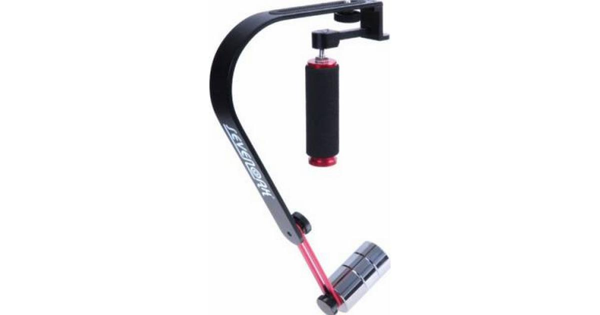
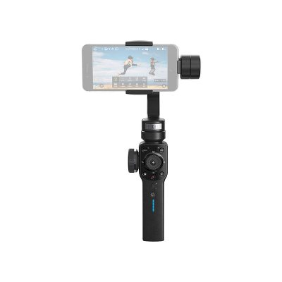

STATIV Kamerastativer, 3-benede & monopod (8) Gorillapods (2)  Kamerastabilisator Sevenoak SK-W02 (analog) (1) Stabilisator Zhiyun Crane 2 til nyere digitale foto- og videokameraer (1) Manual, pdf + list of Compatible cameras, pdf  Stabilisator Zhiyun Smooth 4 til smartphones (2) Manual, pdf Smartphone Grip Handles - 'analoge' håndtag til optagelser med smartphone, kan også monteres på et kamerastativ (4) Mikrofonstativ König & Meyer (1)
 ‹
‹